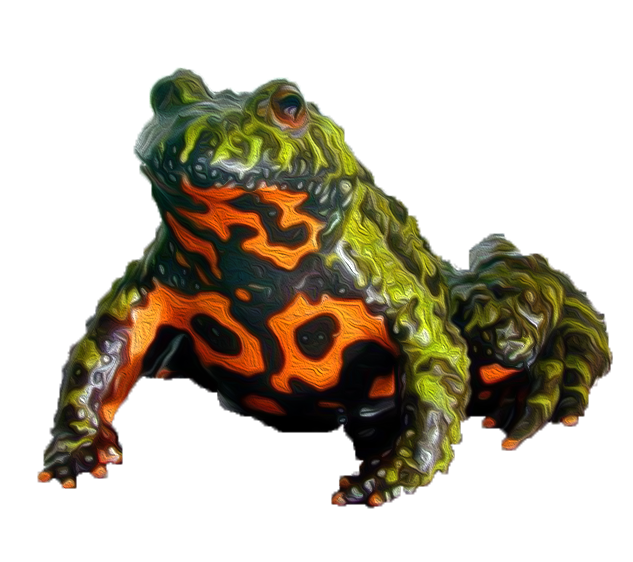
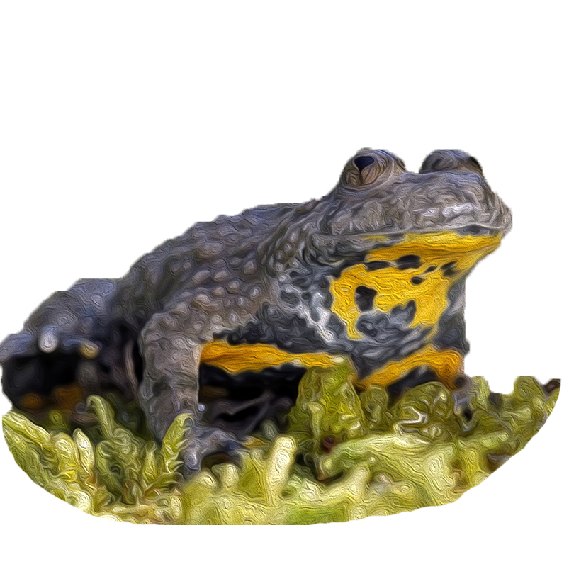

Кумка червоночерева
Невеликі тварини, розміри тулуба найчастіше не перевищують 50-60 мм, спинна поверхня звичайно сіро-коричнюватих (інколи зелених) тонів з невиразними темнішими плямами неправильної форми.
Самці червоночеревих кумок мають внутрішній резонатор, і в сезон розмноження на першому та другому пальцях передніх кінцівок розвиваються шлюбні мозолі. Плавальні перетинки розвинені слабко. Забарвлення черевного боку зазвичай представлене червоними або червоно-помаранчевими плямами неправильної форми на темному тлі.
Самці червоночеревих джерелянок на Балканах більші від самиць, але ці відмінності статистично не достовірні.
У червоночеревих джерлянок з території Карпат горбки на спинному боці округлі. Мінливість цієї ознаки потребує вивчення, так як загострені спинні шпичаки зустрічаються у джерелянок цього виду і поза межами Карпат.
Мінливість зовнішньоморфологічних ознак у межах України вивчена слабко, наявні дані в основному стосуються карпатських популяцій. Так, червоночереві кумки із Закарпаття характеризуються дещо більшими розмірами тіла, ніж особини з Прикарпаття, однак ці відмінності статистично не достовірні.
У деяких зовнішніх морфологічних ознак червоночеревої кумки існує певна специфіка. Так, у забарвленні її черевної поверхні інколи можуть траплятися елементи забарвлення іншого виду — жовточеревої кумки (жовте або помаранчеве тло з великими темними плямами). Найцікавіше, що виявлення таких особливостей відмічено не лише при дотиканні їхніх ареалів, але й у місцях, де живе тільки кумка червоночерева. Для пояснення цього явища була висловлена гіпотеза, що його причиною є зворотні мутації, хоча це твердження є суперечливе у зв'язку з обмеженістю даних щодо характеру спадкування та пластичності цих ознак.
Виявлена у всіх адміністративних районах регіону, є одним із найчисельніших
видів земноводних Західного Поділля. Вид не знайдений на луках, в
лісових біотопах та урбоценозах.



Кумка жовточерева
Амфібії невеликих розмірів, довжина тулуба 27-50 мм, забарвлення спинного боку тіла зазвичай оливково-зеленкуватих тонів з невиразними дрібними темними плямами. Черевна частина яскравого забарвлення, представлена жовтим чи помаранчевим тлом із великими темними плямами, площа жовто-помаранчевого тла звичайно перевищує площу темних плям. Жовто-помаранчеве тло черевної частини переходить на нижню частину задніх кінцівок.
На спинному боці добре розвинені горбки, що закінчуються гострими шипиками. У самців резонаторів брак. В них же в шлюбний сезон на перших трьох пальцях передніх кінцівок та на нижньому боці передрамен розвиваються шлюбні мозолі.
Іноді трапляються джерелянки з зеленим забарвленням спини (зелені морфи), їх вивчення показало, що розвиток цієї ознаки залежить від особливостей генотипу й має адаптивний характер. Вид поширений у Європі, де притаманний гірським районам, однак відсутній на Іберійському півострові та на півночі Італії (долина р. По), на сході його поширення обмежене Українськими Карпатами; межа ареалу на півночі не доходить до прибережних районів Франції, Німеччини, Данії (в Англії інтродукований). Живе на більшій частині Апеннінського та Балканського півостровів.
Цей вид в регіоні має інвазійну природу. Його поява викликана паводками на Дністрі та його притоках, коли окремі особини течією зносяться з Карпат. Саме тому на території Західного Поділля виявлена лише в Західно-Подільському Придністров’ї, яке є очевидно північно-східною межею поширення виду